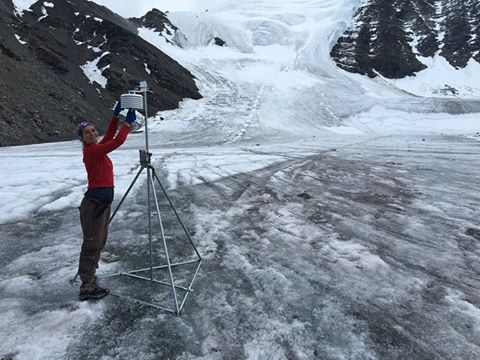
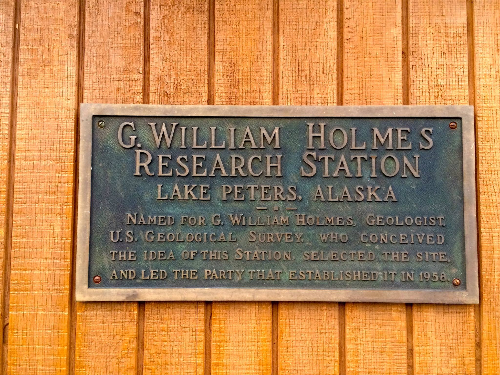

What's New?

2016 Field Season
Our fieldwork at Lake Peters is finished for the year. During the past three weeks, moorings were fished from the lake to retrieve data loggers and sediment traps deployed last year, rivers were waded to gauge their discharge and sediment load, bihourly samples were collected for two days from two rivers to capture their diurnal fluctuations in water isotopes and geochemistry, and weather stations were repaired and refortified to guard against future animal encounters. The hard fieldwork this month was accomplished despite difficult conditions by two exceptionally capable graduate students, Stephanie and Ellie. Now comes the excitement of new discovery as we analyze samples from the lake, rivers and the glacier, and explore the data from our instruments. Once again, we thank the National Science Foundation, US Fish and Wildlife Service, CH2MHill-Polar Services, and Coyote Air Service for their support..

End of the season
With the close of the field season, we thank many who have enabled us to succeed: the National Science Foundation for selecting our project among many proposals worthy of funding; CPS-Polar for experienced logistical support; Coyote Air for exceptionally capable service; the Arctic Refuge office of the US Fish and Wildlife Service for support of scientific understanding and stewardship of wilderness; and to G. William Holmes for recognizing the outstanding research opportunity afforded by Lake Peters when the station was established there in 1958.